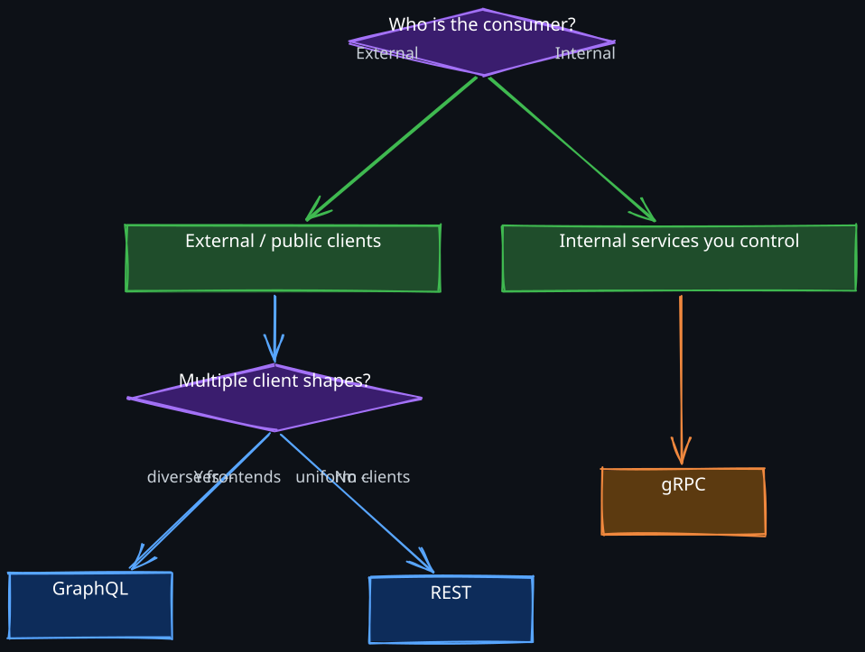
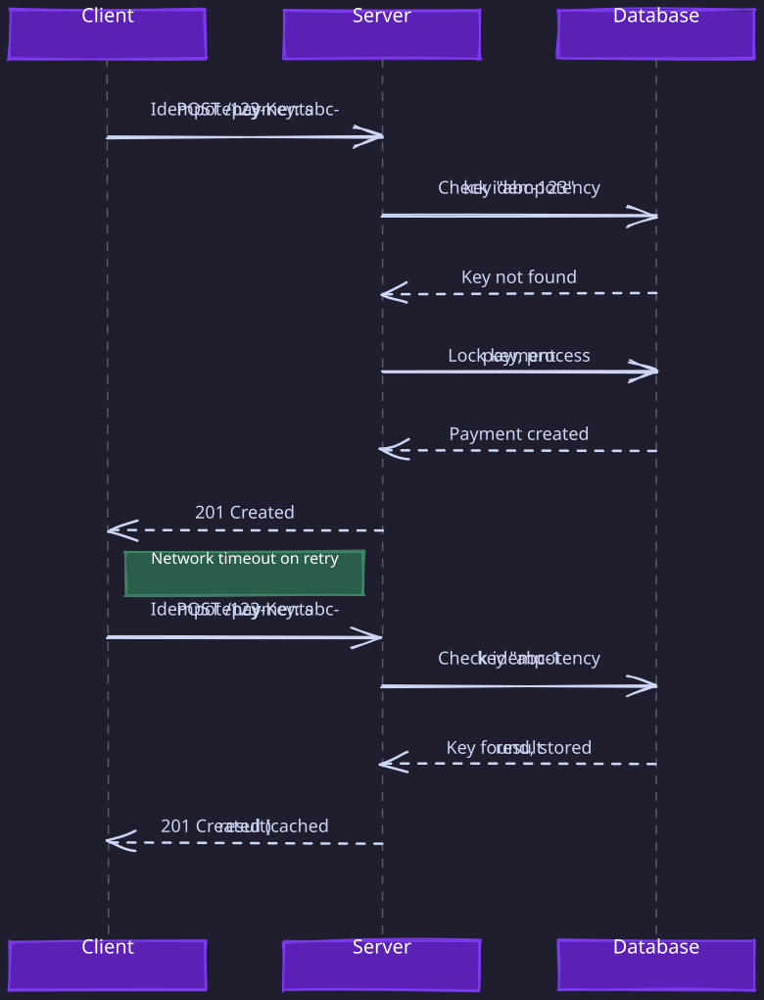

The Story
Roy Fielding defined REST in his 2000 PhD dissertation and has spent the last two decades frustrated that almost nobody implements it correctly. Most “REST APIs” are just JSON over HTTP with no hypermedia links, no HATEOAS, no self-descriptive messages. Fielding has publicly and repeatedly said that if your API doesn’t include hypermedia controls in responses, it’s not REST — it’s just an HTTP-based RPC. The industry adopted the name, ignored the constraints, and Fielding has been writing increasingly exasperated blog posts about it ever since. What we call “REST” is a collective misunderstanding that became a standard through sheer repetition.
Every distributed system communicates through APIs. The design of those APIs determines how easily clients can integrate, how gracefully the system evolves, and how reliably it operates under failure. This note covers the three dominant paradigms — REST, GraphQL, and RPC — not as a feature comparison, but from the perspective of what fundamental problem each one solves.
1. The Three Paradigms: Why Each Exists
The three paradigms emerged to solve different communication problems. Understanding those problems is more useful than memorizing feature tables.
1. REST: Resource-Oriented Communication
The web was built on the idea that everything is a resource with a stable address. REST formalizes this: every entity in your domain gets a URL, and you manipulate it with a small, fixed set of verbs (GET, PUT, DELETE, POST). The key insight is that by constraining the interface, you gain powerful properties for free — caching, intermediary proxies, idempotent retries, and universal tooling.
REST solves the problem of exposing domain entities to a wide variety of clients that you do not control. When your API is consumed by mobile apps, web frontends, third-party integrators, and automated scripts, REST’s uniform interface means every client already knows how to interact with your system. No SDK required. No code generation. Just HTTP.
The limitation is that REST models everything as resources with CRUD operations. Some operations do not map cleanly to “create/read/update/delete a noun.” Batch operations, complex queries, and action-oriented workflows require awkward workarounds.
2. GraphQL: Client-Driven Data Fetching
REST forces a rigid contract: the server decides what data each endpoint returns. When a mobile app needs 3 fields and a web dashboard needs 30, you either return everything (over-fetching, wasting bandwidth on mobile) or create multiple endpoints (multiplying maintenance burden).
GraphQL solves the problem of heterogeneous clients that need different shapes of the same data. Instead of the server dictating response shape, the client sends a query describing exactly what it needs. A single endpoint serves all clients, each getting precisely the fields they requested.
This is transformative when you have many client teams iterating rapidly. A frontend engineer can add a new field to their query without waiting for a backend deploy. But this power comes at a cost: query parsing, authorization at the field level instead of the endpoint level, and fundamentally different caching semantics.
3. RPC: Action-Oriented Service Communication
REST and GraphQL are designed for clients that may be external, untrusted, or highly varied. Inside your own infrastructure, the problem is different. Your services trust each other, share deployment pipelines, and need raw performance. You are not modeling resources — you are calling functions across a network.
RPC solves the problem of high-performance, strongly-typed communication between services you control. With gRPC and Protocol Buffers, you define a service contract in a .proto file, generate client and server stubs in any language, and communicate using binary serialization over HTTP/2. The result feels like calling a local function, but it executes on a remote machine.
RPC is the wrong choice for public APIs (browsers cannot natively speak gRPC, and the contract requires code generation). But for internal microservice meshes where latency and throughput matter, it is the clear winner.
4. Choosing Between Them

In practice, production systems use all three. A common pattern: REST or GraphQL at the edge for public clients, gRPC for the internal service mesh, and an API gateway translating between them.
2. REST Deep Dive
1. Resources and URL Design
REST models your domain as a collection of resources, each identified by a URL. The URL is the resource’s permanent address — it should describe what the resource is, not what operation you want to perform.
Use plural nouns for collections:
/events— the collection of all events/events/{eventId}— a specific event/events/{eventId}/tickets— tickets belonging to that event
Nesting vs. flat URLs. Nest when the child resource has no meaning without its parent. /events/{eventId}/tickets makes sense because a ticket only exists in the context of an event. But if the child can be independently addressed, prefer flat URLs with filters: /tickets?event_id=123. The test: can you sensibly form a request to the child without knowing the parent? If not, nest.
2. HTTP Methods and Semantics
The HTTP specification assigns precise semantics to each method. These are not arbitrary conventions — they enable infrastructure (caches, load balancers, retry logic) to make correct decisions without understanding your application.
| Method | Purpose | Idempotent | Safe | Typical Use |
|---|---|---|---|---|
| GET | Retrieve resource | Yes | Yes | Read data |
| POST | Create new resource | No | No | Submit data, create |
| PUT | Replace entire resource | Yes | No | Full update |
| PATCH | Partial update | No* | No | Partial update |
| DELETE | Remove resource | Yes | No | Delete |
*PATCH can be designed to be idempotent, but the spec does not guarantee it.
Why “safe” and “idempotent” matter. A safe method (GET, HEAD) guarantees no side effects, which means caches, prefetchers, and crawlers can call it freely. An idempotent method (GET, PUT, DELETE) guarantees that calling it multiple times produces the same result as calling it once. This is not a theoretical nicety — it is the foundation of reliable communication in distributed systems. When a network timeout occurs after sending a PUT request, the client does not know whether the server processed it. Because PUT is idempotent, the client can safely retry without risk of creating a duplicate or corrupting state. Without idempotency guarantees, every retry requires complex deduplication logic.
3. Status Codes: Why They Have the Semantics They Do
Status codes exist so that clients, proxies, and load balancers can make decisions without parsing response bodies. The categories are deliberate.
2xx — Success. The request was processed correctly.
- 200 OK — Generic success for GET, PUT, PATCH when returning a body.
- 201 Created — Resource created. Include a
Locationheader with the new resource’s URI so the client knows where to find it. - 202 Accepted — The server accepted the request for asynchronous processing. This is critical for long-running operations: the client gets an immediate acknowledgment and a status endpoint to poll.
- 204 No Content — Success with no response body. Common for DELETE, where the resource no longer exists and there is nothing useful to return.
4xx — Client errors. The problem is with the request, and retrying the same request will fail again. This distinction matters for retry logic: automated clients should not retry 4xx errors.
- 400 Bad Request — Malformed input or validation failure. Include structured error details so the client can fix the request.
- 401 Unauthorized — Authentication required or token invalid. The distinction from 403 is important: 401 means “I do not know who you are,” while 403 means “I know who you are, and you are not allowed.”
- 404 Not Found — The resource does not exist. In security-sensitive contexts, return 404 even for resources the user is not authorized to see, to avoid leaking existence information.
- 409 Conflict — The request conflicts with current server state. The classic use case is optimistic concurrency: the client sent an
If-Matchheader with a stale ETag. - 429 Too Many Requests — Rate limit exceeded. Always include a
Retry-Afterheader so the client knows when to try again.
5xx — Server errors. The problem is on the server side, and the client should retry (with backoff). This is why the 4xx/5xx distinction exists: it tells automated retry logic whether retrying is worth attempting.
- 500 Internal Server Error — Generic server failure. Never expose internal details (stack traces, database errors) in production.
- 502 Bad Gateway / 503 Service Unavailable / 504 Gateway Timeout — Upstream or availability issues. Use 503 with
Retry-Afterduring planned maintenance.
4. Input Placement
- Path parameters — Required identifiers that are part of the resource’s identity:
/events/{eventId}. - Query parameters — Optional modifiers: filters, sorting, pagination. These should never change the resource being addressed, only how it is presented.
/events/?startTime={}&endTime={} - Request body — Complex payloads for create and update operations. Use
application/jsonby default.
5. Idempotency in Distributed Systems
In a distributed system, network failures are not exceptional — they are routine. A client sends a POST to create a payment, the server processes it, but the response is lost due to a network partition. The client does not know whether the payment was created. Without idempotency, retrying could create a duplicate charge.
Idempotency keys. For non-idempotent operations (payments, bookings, order creation), accept an Idempotency-Key header. The server stores the result keyed by this value. If the same key arrives again, the server returns the stored result instead of processing the request again.
The implementation requires careful thought:
- Storage — idempotency keys must be stored durably. If you store them only in memory, a server restart loses them and retries create duplicates.
- Race conditions — two identical requests arriving simultaneously must not both execute. Use a database lock or compare-and-swap on the idempotency key.
- Expiration — keys cannot be stored forever. Choose a TTL that exceeds your retry window (typically 24-48 hours).
Optimistic concurrency. For updates, use ETag and If-Match headers. The server returns an ETag with every response. The client includes If-Match: <etag> on updates. If the resource changed since the client last read it, the server returns 412 Precondition Failed. This prevents lost updates without pessimistic locking.

3. Pagination, Filtering, and Sorting
Any API that returns collections must handle pagination. Returning a million records in one response is impractical — it wastes bandwidth, overwhelms clients, and puts unnecessary load on the database.
1. Offset-Based Pagination
GET /users?page=2&limit=20
GET /users?offset=40&limit=20
Simple to implement and allows jumping to arbitrary pages. But it has two fundamental problems at scale:
- Performance degrades with offset. The database must skip
offsetrows before returninglimitrows. At offset 1,000,000, the database scans and discards a million rows. This is O(offset + limit), not O(limit). - Inconsistent results under writes. If a row is inserted or deleted between page requests, items shift. A user paging through results may see the same item twice or miss one entirely.
2. Cursor-Based Pagination
GET /users?cursor=eyJpZCI6MTIzfQ&limit=20
{
"data": [...],
"next_cursor": "eyJpZCI6MTQzfQ",
"has_more": true
}The cursor is an opaque token (typically a base64-encoded value of the last item’s sort key). The database query becomes WHERE id > :cursor_id ORDER BY id LIMIT 20, which uses an index scan regardless of position. Performance is O(limit) at any depth.
Cursors also solve the inconsistent results problem. The difference is in what the two approaches use as a reference point:
- Offset is a positional reference — “skip 40 rows” depends on every row before position 40 staying in place. If a new row is inserted at position 10 between page requests, every subsequent row shifts forward by one. The row that was at position 40 is now at position 41, so the client sees it again on the next page. A deletion causes the opposite: a row is skipped entirely.
- Cursor is a stable anchor in the sort order —
WHERE id > 143always means “items after this specific record,” regardless of what happens elsewhere in the dataset. If new rows are inserted withid < 143, or existing rows before that point are deleted, the query result is unaffected. The cursor refers to a fixed point in the ordering, not a position that shifts.
Cursors do not provide a snapshot of the dataset. Items inserted after the cursor between requests will appear in subsequent pages (this is generally correct behavior — the client sees new data as it moves forward). Items deleted after being returned won’t cause gaps in future pages. What cursors guarantee is that the client will never see the same item twice or skip an item due to concurrent writes — the exact problems that make offset-based pagination unreliable under mutation.
The tradeoff: clients cannot jump to an arbitrary page. This is acceptable for infinite-scroll UIs and machine-to-machine pagination, but not for interfaces that need “go to page 47.”
3. Filtering and Sorting
GET /users?status=active&role=admin
GET /users?sort=-createdAt,lastName
Use query parameters for filters. The - prefix convention for descending sort is widely adopted. Document supported filter fields explicitly — undocumented filters become implicit API contracts that break when removed (Hyrum’s Law applies here too).
6. API Versioning Strategies
Every successful API eventually needs to change in ways that break existing clients. Versioning is the mechanism for making breaking changes without forcing all clients to update simultaneously.
1. Why Backward Compatibility Is Hard: Hyrum’s Law
Hyrum’s Law states: “With a sufficient number of users of an API, all observable behaviors of your system will be depended on by somebody.” This means that even behavior you consider an implementation detail — the order of JSON keys, the exact error message text, the timing of responses — will become someone’s implicit contract.
This makes “non-breaking changes” harder than they appear. Removing a field that no client should be using? Someone is using it. Changing a 200 response to a 201? Someone’s retry logic depends on the exact code. Adding a new enum value to a response? Someone’s switch statement does not handle it and throws an exception.
Versioning acknowledges this reality: when you need to change behavior that clients depend on, give them a new version and a migration window.
1. URI Versioning
/v1/users
/v2/users
The most common approach. Simple, explicit, and easy to route at the load balancer level. Every request visibly declares which contract it expects. URI versioning is the pragmatic default for most APIs.
2. Header Versioning
GET /users
Accept: application/vnd.myapi.v2+json
Clean URLs, and more aligned with REST principles (same resource, different representation). But the version is invisible in logs, browser address bars, and curl commands unless you inspect headers. Harder to debug, harder to communicate to third-party developers.
Practical Guidance
- Use URI versioning unless you have a strong reason not to.
- Version at the major level only. Non-breaking changes (adding fields, adding endpoints) should not require a new version.
- When releasing a new version, publish a migration guide and deprecation timeline. Support the old version for at least 6-12 months.
- Monitor old version usage. Do not sunset a version until traffic is negligible.
7. Cross-Cutting Concerns
1. CORS: Why the Preflight Mechanism Exists
CORS (Cross-Origin Resource Sharing) is frequently misunderstood because engineers think of it as a server-side security mechanism. It is not. CORS is a browser security mechanism that restricts what JavaScript on one origin can do with responses from another origin.
- The Same-Origin Policy. By default, JavaScript running on
https://myapp.comcan only read responses fromhttps://myapp.com. A request tohttps://api.myapp.comis cross-origin (different subdomain = different origin). Without CORS, the browser silently blocks the JavaScript from reading the response. The server still receives and processes the request — the browser blocks the response from reaching the JavaScript. Subdomains are not automatically trusted because they can be controlled by different teams, compromised independently, or taken over via dangling DNS records — the browser has no way to distinguish “related” subdomains from unrelated ones, so it treats all origin mismatches equally. - Why this policy exists. Without it, any website you visit could make authenticated requests to your bank’s API using your cookies, read the response, and exfiltrate your account data. The Same-Origin Policy prevents this by default.
The preflight mechanism. For “simple” requests (GET with standard headers), the browser sends the request directly and checks the CORS headers on the response. But for requests that could cause side effects — POST with JSON body, PUT, DELETE, or any request with custom headers like Authorization — the browser sends a preflight OPTIONS request first.
The preflight asks: “Server, will you accept a POST with an Authorization header from https://myapp.com?” The server responds with Access-Control-Allow-* headers. Only if the server explicitly permits the origin, method, and headers does the browser send the actual request.
OPTIONS /users
Origin: https://myapp.com
Access-Control-Request-Method: POST
Access-Control-Request-Headers: Authorization
Response:
Access-Control-Allow-Origin: https://myapp.com
Access-Control-Allow-Methods: POST
Access-Control-Allow-Headers: Authorization
Why preflight exists for non-simple requests. Before CORS, servers could assume that a POST with a JSON body and an Authorization header must come from their own frontend — browsers simply could not send such cross-origin requests. CORS introduced the ability for browsers to make these requests, but the preflight ensures backward compatibility: old servers that never heard of CORS will not respond with Access-Control-Allow-* headers, so the browser will not send the dangerous request. The preflight protects legacy servers from a new browser capability they were not designed for.
Key CORS response headers:
Access-Control-Allow-Origin— which origins are permitted (specific origin or*)Access-Control-Allow-Methods— which HTTP methods are permittedAccess-Control-Allow-Headers— which request headers the client can sendAccess-Control-Allow-Credentials— whether cookies and auth headers are permitted (cannot be used withAllow-Origin: *)
2. Security
1. HTTPS
All API communication must use HTTPS. This is non-negotiable in production. Without TLS, every request and response traverses the network in plaintext — authentication tokens, user data, and business logic are visible to any network observer. TLS 1.3 is preferred: it reduces the handshake from two round-trips to one, improving latency for new connections.
2. Authentication and Authorization
OAuth 2.0 separates the authorization server (issues tokens) from the resource server (validates tokens). The client authenticates with the authorization server, receives an access token, and includes it in API requests via the Authorization: Bearer <token> header. The resource server validates the token without needing to store session state.
JWT (JSON Web Tokens) are a common token format. A JWT contains claims (user ID, roles, expiration) signed by the authorization server. The resource server verifies the signature without contacting the authorization server, eliminating a network round-trip per request. The tradeoff: JWTs cannot be revoked before expiration without additional infrastructure (a token blacklist or short expiration with refresh tokens).
Practical guidance:
- Use short-lived access tokens (15 minutes). This limits the damage window if a token is compromised.
- Use refresh tokens for long-lived sessions. The client exchanges a refresh token for a new access token without re-authenticating.
- Rotate refresh tokens on each use. If a refresh token is stolen, the legitimate client’s next rotation attempt fails, alerting you to the compromise.
3. Rate Limiting
Rate limiting protects your API from abuse, prevents resource exhaustion, and ensures fair usage across clients. Without it, a single misbehaving client can consume all server resources and degrade service for everyone.
Include rate limit state in response headers so clients can self-regulate:
X-RateLimit-Limit: 100— maximum requests allowed per windowX-RateLimit-Remaining: 75— requests remaining before throttlingX-RateLimit-Reset: 1699564800— Unix timestamp when the window resets
When the limit is exceeded, return 429 Too Many Requests with a Retry-After header.
Common strategies, each with different tradeoffs: Rate-Limiting Strategies & Trade-offs
- Fixed window — simple to implement, but vulnerable to boundary spikes (a client can make 2x the limit by timing requests at the window boundary).
- Sliding window — smooths out the boundary problem but requires more state tracking.
- Token bucket — allows bursts up to a maximum, then throttles. Good for APIs with bursty traffic patterns. Use this as default
4. Input Validation
Every piece of client input is a potential attack vector. Validate defensively:
- SQL injection — never concatenate user input into SQL strings. Use parameterized queries exclusively. This is the single most effective defense against the most common attack class.
- XSS (Cross-Site Scripting) — if your API returns user-generated content that will be rendered in a browser, sanitize HTML output. An attacker can inject JavaScript that executes in other users’ browsers, stealing sessions or exfiltrating data.
- Command injection — if user input is ever passed to a system shell (it should not be, but if it is), sanitize rigorously. Treat user input as data, never as code.
- Enforce constraints — maximum string lengths, allowed character sets, expected formats. Reject invalid input early with clear error messages. The deeper invalid data penetrates your system, the harder the resulting bugs are to diagnose.
Revision Summary
- REST exists for resource-oriented communication with external clients. Its uniform interface enables caching, retries, and universal tooling. Idempotency of PUT and DELETE is critical for safe retries in distributed systems.
- GraphQL exists for client-driven data fetching when multiple clients need different data shapes. The N+1 problem arises from isolated resolver execution; DataLoader solves it through batching and deduplication within a single execution tick.
- gRPC/RPC exists for high-performance internal service communication. Binary serialization avoids the CPU cost of JSON parsing at high throughput. HTTP/2 streaming enables server-push and bidirectional communication patterns.
- Idempotency keys make non-idempotent operations safe to retry. Store results durably, handle concurrent duplicate requests, and expire keys after the retry window.
- Cursor-based pagination is O(limit) at any depth, unlike offset-based which is O(offset + limit). Use cursors for large or frequently-written datasets.
- Hyrum’s Law makes backward compatibility harder than it appears — all observable behavior becomes someone’s implicit contract.
- CORS preflight exists to protect legacy servers from new browser capabilities. The browser, not the server, enforces the policy.
- Rate limiting protects against resource exhaustion. Token bucket allows bursts; sliding window prevents boundary spikes.
Deep Understanding Questions
-
A client sends a POST to create a payment, the server processes it and writes to the database, but the response is lost due to a network partition. The client retries with the same idempotency key, but the retry hits a different server instance. What infrastructure is required to make this work correctly? What happens if the idempotency key store uses eventual consistency? Ans:
-
You are migrating a REST API from v1 to v2. The v1 response includes a
statusfield with values"active"and"inactive". In v2, you want to add"suspended". A client has a switch statement over the status values that throws on unknown values. Is adding a new enum value a breaking change? How does Hyrum’s Law apply here? Ans: -
A GraphQL query requests
users { posts { comments { author { posts } } } }. Without any safeguards, how deep can this recursion go? What is the impact on the database? What mechanisms prevent this, and what are their tradeoffs? Ans: -
Your gRPC service handles 100K RPS with protobuf serialization. A new requirement demands that the same service also accept JSON for debugging purposes. What is the expected CPU impact? How would you architect this so JSON support does not degrade the hot path? Ans:
-
A cursor-based pagination API returns 20 items per page. Between page 1 and page 2 requests, 5 new items are inserted that sort before the cursor. Does the client see them? What if 5 items before the cursor are deleted? How does cursor-based pagination maintain consistency that offset-based cannot? Ans:
-
Your API gateway implements CORS with
Access-Control-Allow-Origin: *. A frontend engineer reports that authenticated requests (with cookies) are being blocked by the browser. Why? What is the security reasoning behind this restriction? Ans: -
Two concurrent requests arrive with the same idempotency key. Request A begins processing and writes to the database. Request B checks the idempotency key store, finds no result yet (A has not finished), and also begins processing. Both requests complete and attempt to store their results. What is the consequence, and how do you prevent this race condition? Ans:
-
A DataLoader batches 500 venue IDs into a single
WHERE id IN (...)query. The database query planner switches from an index scan to a sequential scan because the IN list is too large. How does this manifest in production? What strategies mitigate this at scale? Ans: